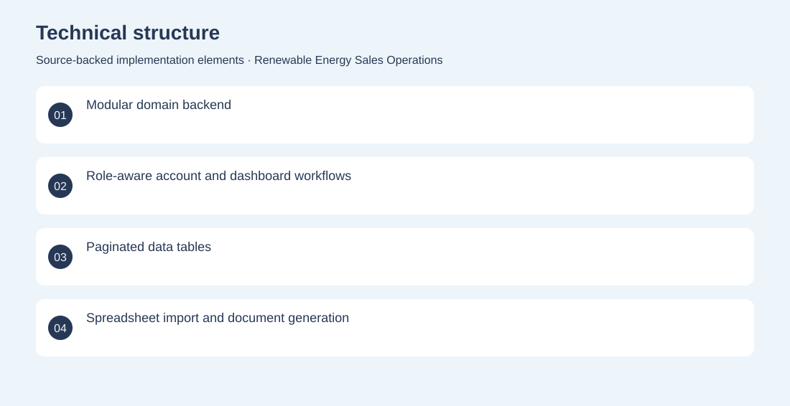

The project
A full-stack operations platform for a renewable-energy sales organisation. It brings account roles, customer and lead management, offers, reporting and installation-related workflows into one application. Built a React dashboard and modular NestJS API with persistent records, role-aware workflows, spreadsheet handling and document-generation components. Archived implementation; current deployment unverified. No adoption, revenue or deployment claims are inferred from the repository.
The problem
Sales teams need to coordinate customer information, commercial offers and delivery progress without scattering work across separate tools.
The solution
Built a React dashboard and modular NestJS API with persistent records, role-aware workflows, spreadsheet handling and document-generation components.
My contribution
Full-stack application engineering across sales workflows, dashboards, backend modules and business-document handling.
Technical structure

The portfolio cover is an editorial illustration. No live product screenshot is presented for this project.
Showcase assets
{kind=link}
{kind=link}
{kind=link}
New portfolio identity. Newly designed marks are portfolio treatments, not claims of official client branding.